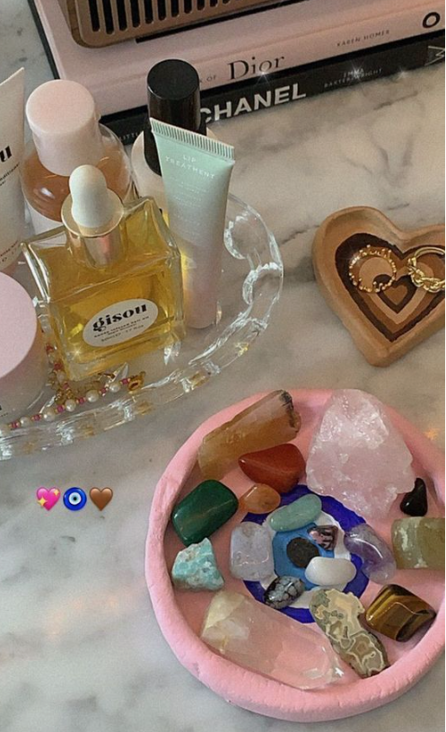
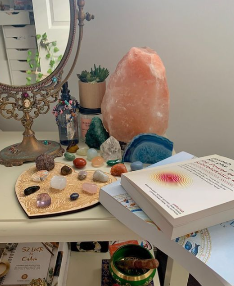
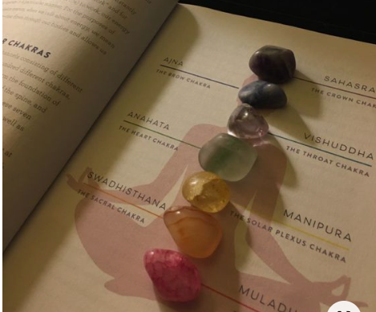

¿ Que es ?
El cuarzo es un mineral compuesto de sílice. Tras el feldespato es el mineral más común de la corteza terrestre estando presente en una gran cantidad de rocas ígneas, metamórficas y sedimentarias. Destaca por su dureza y resistencia a la meteorización en la superficie terrestre.
¿ Cuales son ?
- Cuarzo lechoso, traslúcido o casi opaco. - Cuarzo ahumado, transparente y de distintos tonos de gris. - Cuarzo citrino, de color amarillo hasta anaranjado claro. - Amatista, de color violeta más o menos intenso. - Cuarzo rosa, por la presencia aluminio.
¿ En que nos ayuda?
Favorece la relajación y ayuda a bloquear el estrés, aportando claridad para equilibrar el cuerpo y la mente. El ágata se considera una piedra preciosa de energía suave y es conocida por aportar armonía y equilibrio. Atrae el balance en la vida y la confianza en uno mismo
